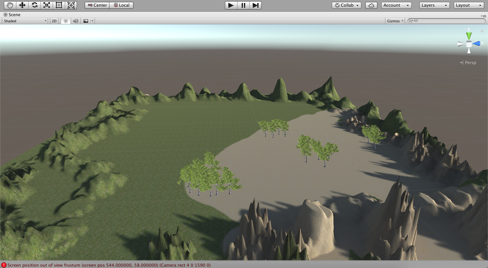
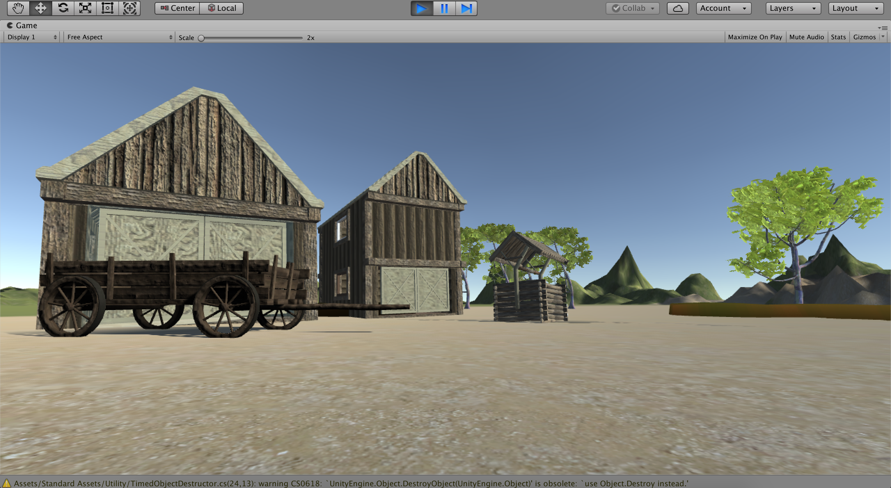

Dit is de topic waar het over ging in week 2, virtual reality en augmented reality.
Voor deze opdrachten werd het programma Unity gebruikt, waarmee je als het ware een virtuele wereld kan maken.
Maak een terrein
Hier moesten we een soort van ondergrond/terrein maken die als basis diende voor het Unity landschap.

Objecten van Asset Store gebruiken en door het landschap heen lopen.
Hier was de opdracht om uit de Asset Store van Unity objecten toe te voegen aan je terrein en deze te verplaatsen/bewerken. Daarnaast moest er een FirstPersonCharacter worden toegevoegd zodat je door het terrein heen kon lopen.

Trigger toevoegen
Hier was de opdracht om een trigger in te stellen bij een object. In onderstaande afbeelding zie je de trigger die gebruikt wordt (vuur). Het object waarbij de trigger was gezet moest in brand vliegen bij het naderen ervan. Dat is mij niet helemaal gelukt maar wel om de trigger neer te zetten.
Madmapper assigment
Madmapper is een 3D projectie software waarbij de output geprojecteerd wordt op een bepaald vlak in combinatie met het programma Syphon. Dit programma wordt alleen ondersteund door MacBook, dus heb ik met twee anderen uit de klas samen gedaan, Bob en Maartje. Het was de bedoeling om iets te maken op Madmapper en de output ervan te projecteren ergens op. Bekijk de afbeelding en onze video voor ons resultaat!